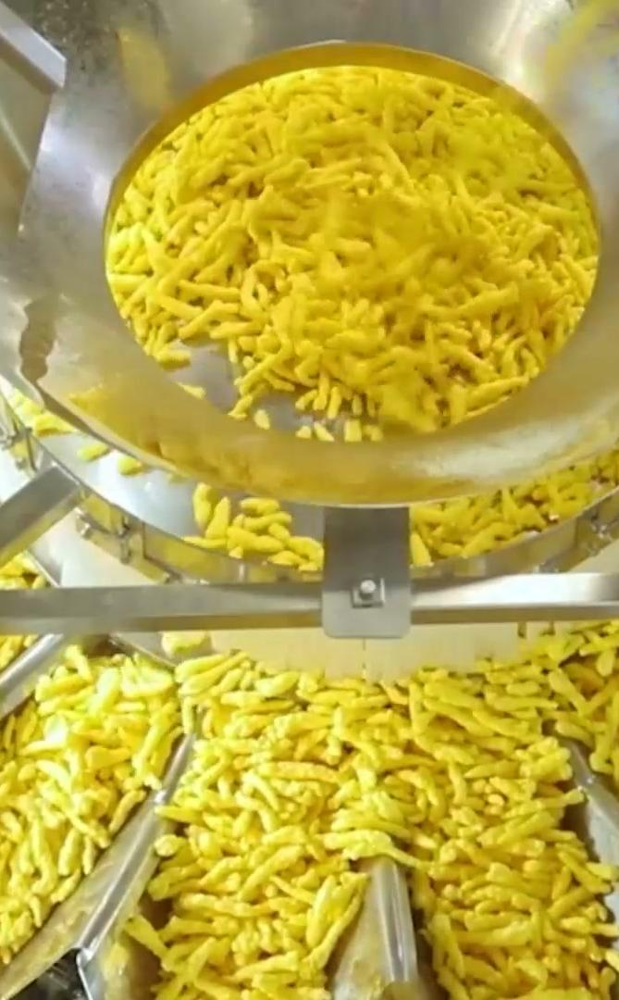
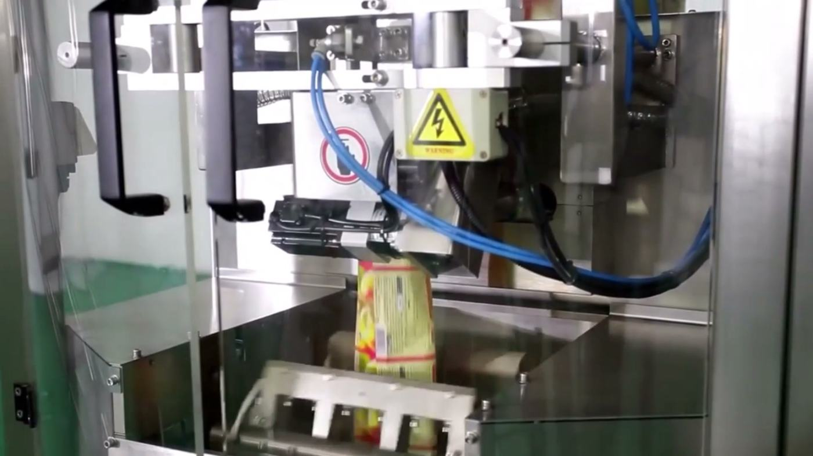
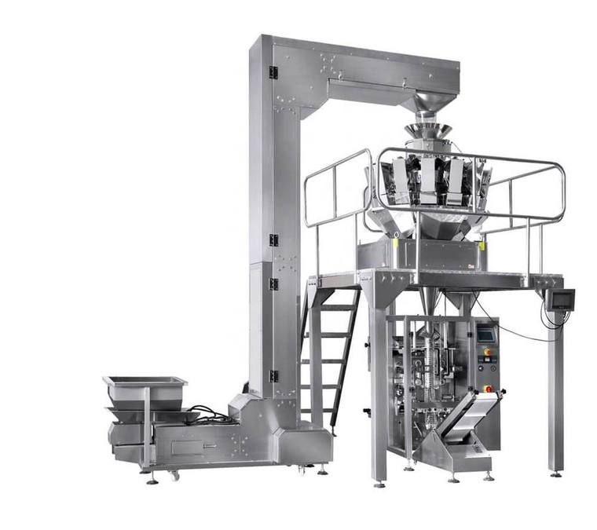

Conegliano (TV), dal progetto all'assistenza
Macchine per confezionare, su misura del tuo prodotto.
Confezionatrici verticali, pesatrici multitesta, dosatori e contapezzi per alimentare, pet food, chimico e minuterie. Progettati e costruiti da noi.
- 25+anni di esperienza nel packaging
- 48macchine a catalogo, tutte personalizzabili
- 450buste al minuto con le monodose a 10 piste
- 300pesate al minuto con la multitesta Mix High
- In casaprogettazione, centri di lavoro, ricambi e assistenza
Dalla bobina alla busta finita.
Una confezionatrice verticale lavora in quattro passaggi. Scorri e guardali uno per uno, come se fossi davanti alla macchina.

-
01
La bobina
Il film parte da una bobina. La fotocellula legge la tacca di stampa: il disegno cade sempre nello stesso punto della busta.
-
02
Il tubo formatore
Il film si avvolge sul tubo e la barra verticale lo salda in un tubo continuo. Quando cambi formato, il tubo si sostituisce senza attrezzi.
-
03
La dose giusta
Sopra la macchina, la pesatrice multitesta combina i cestelli per arrivare al peso richiesto e scarica la dose dentro il tubo.
-
04
Saldatura e taglio
Le ganasce servocomandate chiudono la busta piena e il fondo di quella nuova, la lama taglia. In continuo si arriva a 180 buste al minuto.
Cuscino, fondo quadro, euroslot, a collana, stand-up, tetraedriche, sacchi a rete da 5 a 25 kg, bustine monodose e stick.
Trova la macchina per la tua bustaChe cosa devi confezionare?
Scegli il prodotto e ti mostriamo le macchine adatte tra le 48 a catalogo. Ognuna si adatta al tuo formato di busta e alla velocità che ti serve.
14 confezionatrici verticali
Velocità massime indicative: dipendono dal prodotto, dal peso della confezione e dal film. Ogni macchina si personalizza sul tuo impianto.
Nelle buste delle nostre macchine finiscono
patatine caffè in grani pasta corta riso lenticchie frutta secca caramelle confetti biscotti taralli croissant
pesce surgelato insalata mozzarelle ghiaccio spezie miele ketchup detersivi pellet mangimi viti kit per mobili
Impianti già al lavoro.
Alcune linee che abbiamo progettato e consegnato: alimentare, surgelati, integratori e minuterie.
Guarda le macchine in funzione su YouTube
Multitesta per pasta o riso Grissini Alimenti surgelati Monodose per integratori in gel Capsule di caffè Minuterie per mobili Brioches surgelate Pesce surgelato Minuterie metalliche Minuterie plastiche per edilizia Frutta e verdura a cubetti Minuterie plastiche
Un solo interlocutore, dalla prima telefonata alla manutenzione.
Progettiamo, costruiamo e installiamo nella nostra sede di Conegliano. Poi restiamo: formazione, teleassistenza e ricambi.
- 1
Consulenza
Partiamo dal tuo prodotto, dal tipo di busta e dallo spazio che hai in reparto. È gratuita.
- 2
Preventivo
Ti proponiamo la macchina o la linea completa, con i dispositivi che servono davvero.
- 3
Progettazione
L'ufficio tecnico disegna la soluzione su misura, tecnica e logistica, sulle tue esigenze.
- 4
Costruzione
I componenti escono dai nostri centri di lavoro e la macchina si monta in officina.
- 5
Collaudo
Lo staff tecnico controlla ogni macchinario prima che esca, nel rispetto delle normative.
- 6
Installazione
Montiamo e avviamo l'impianto nel tuo stabilimento.
- 7
Formazione
Insegniamo ai tuoi operatori a usarla al meglio fin dal primo giorno.
- 8
Teleassistenza
Interveniamo anche da remoto, per ridurre al minimo i fermi macchina.
- 9
Manutenzione e ricambi
Ricambi sempre a magazzino, anche i componenti a disegno, e tecnici che vengono da te.
Progettate e costruite a Conegliano.
PMC Solutions nasce dall'unione di competenze e realtà produttive con oltre 25 anni nel packaging. La sede è nel cuore produttivo del Veneto.
Con i centri di lavoro interni produciamo noi i componenti delle nostre macchine: qualità sotto controllo, consegne più rapide e ricambi pronti, anche quelli a disegno. Il reparto ricerca e sviluppo lavora ogni giorno per migliorare prestazioni ed efficienza degli impianti.
Settori in cui lavoriamo
- Alimentare
- Pet food
- Farmaceutico
- Chimico
- Pellet e fertilizzanti
- Minuterie metalliche e plastiche
Pronte per l'industria 4.0
Le nostre macchine hanno teleassistenza e le caratteristiche tecniche per rientrare nel piano Transizione 4.0. Ti diamo la documentazione per verificare il credito d'imposta in vigore.
Requisiti aggiornati sul sito del MIMITRaccontaci il tuo prodotto.
La consulenza è gratuita. Dicci cosa devi confezionare, in che busta e quante al minuto: ti proponiamo la soluzione.
- Ufficio0438 207628
- Cellulare e WhatsApp349 814 9876
- Emailinfo@pmcsolutions.it
- Sede e officinaVia C. Vazzoler 24
31015 Conegliano (TV) - Orari
[DA CONFERMARE]